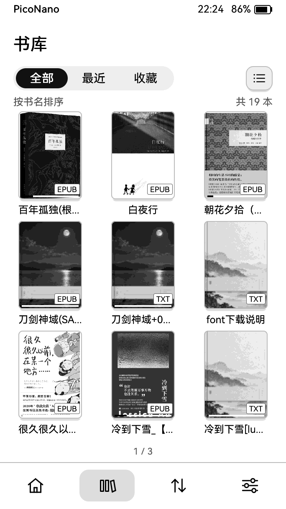
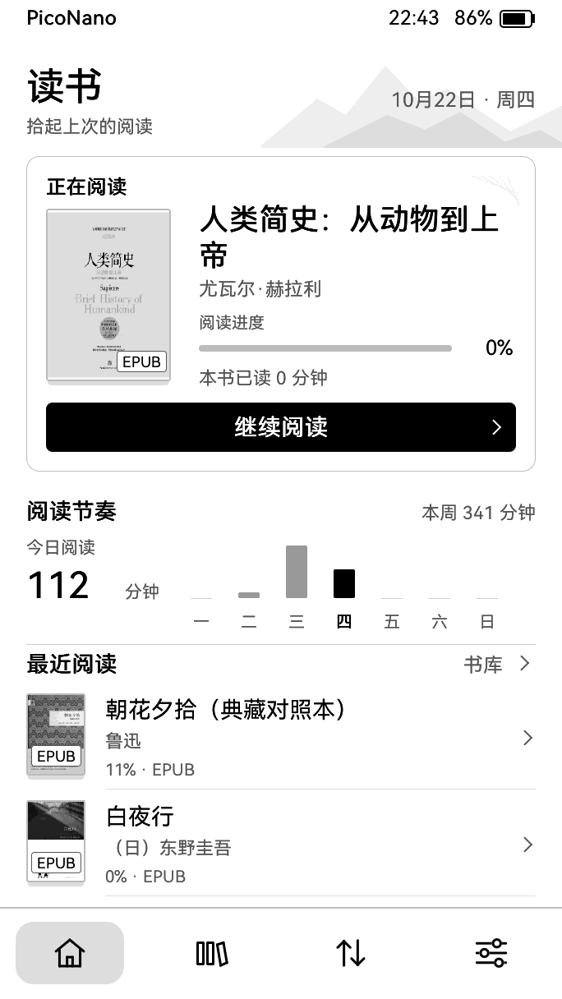

TXT / EPUB从你的本地书库开始
字体与排版找到自己的阅读节奏
阅读背景与锁屏把喜欢留在屏幕上
开源，持续打磨为 RDP-G01-W 打造
每一天，都想再翻一页
熟悉的阅读，多一点自在。
不必想象它的样子。看看 PicoNano 在真实设备上的界面。
书、字体、背景。
喜欢的，都可以带过来。
通过设备的网页传书功能，管理本地书籍、字体、封面、锁屏与阅读背景。图片会在上传前转换成适合墨水屏的灰阶。
先安装固件，开机后进入设备的传书页面，按屏幕指引连接。此处的 USB 安装器用于安装固件。
了解项目与使用说明准备好，给阅读器换个新开始
跟着步骤，装好 PicoNano。
一台电脑、一根数据线。直接在浏览器里完成安装或升级。
当前浏览器无法使用 Web Serial。请用电脑上的 Chrome 或 Edge，通过 HTTPS 或 localhost 打开本页。
选择固件 读取中
1 连接你的阅读器
- 用能传数据的 USB 线把阅读器接到电脑。
- 点“连接设备”，在弹窗里选择出现的串口（通常名为 USB JTAG/serial debug unit）。
- 如果一直连不上，让设备进入下载模式后再试（ESP32-S3 通常是按住 BOOT 再接 USB；本机具体按键以原厂说明为准）。
2 核对后，开始安装
请选择刷入方式，再连接设备。
详细日志
3 写入完成后，看看设备
写入和校验完成后，安装器会尝试重启。请观察阅读器是否正常启动，再按屏幕提示使用；网页显示写入成功不等于设备已完成启动。
有疑问？从这里开始。
连接、备份与恢复，你可能需要的答案。
找不到设备串口，怎么办？
先确认 USB 线能传输数据，尝试换一根线或电脑上的另一个 USB 接口。关闭串口监视器、esptool 和其他占用设备的刷机网页，再点击“连接设备”。如果仍无法连接，按原厂说明进入下载模式后重试。
第一次安装和日常升级，怎么选？
从原厂或其他固件切换，选择“完整刷入”，先保存备份再核对写入计划。已经使用 PicoNano 时，可选择“保留布局升级”；如果布局不匹配，安装器会停止，请根据提示选择完整刷入。清除设置和初始化内部数据均需单独确认。
安装器会写哪些内容
安装器先读取设备上的分区表，再决定要写什么：
- 保留布局升级：设备分区必须与已核对旧表相同，完整 OTA 选择区须全为空白，只写 0x20000 应用；非空、短读或布局不匹配则停止。0.9 首次启用设备 Wi-Fi OTA 必须先备份并选择“完整刷入”迁移兼容引导程序；只更新应用不能启用旧引导程序的失败回滚。
- 升级（设备已是本固件布局）：写应用固件和 OTA 选择；引导程序与设备相同时跳过。已识别的内部数据与壁纸保留；无法识别时默认保留并提示，只有明确选择初始化才清除。
- 完整刷入（原厂、其他系统或恢复）：写引导程序、应用、OTA 选择，布局不同时最后写分区表。NVS 默认保留，有冲突必须明确勾选清除才能开始；内部数据和壁纸完整分区全为空白时自动初始化，布局不兼容且有数据时必须明确选择初始化。勾选初始化也会清除已识别的内部数据和壁纸。
- 任何情况都不整片擦除，不碰存储卡，不写屏幕电源芯片（VCOM 只从 PMU 读取）。每段写完都做 MD5 校验。
开机后没有画面
固件读不到有效的屏幕电压（VCOM）时会故意不刷屏，屏幕保持原样，这是保护行为。设置区无法初始化时固件也会停下。可用串口查看日志（115200）：看到 “NVS unavailable” 时，重新连接并勾选“清除设置区”再装一次。
如何恢复原来的系统
用安装前保存的整片备份写回 0x0：esptool --chip esp32s3 -p COM? write-flash 0x0 PicoNano-backup.bin。中途断开时设备会停在下载模式，可直接重新安装或写回备份。
命令行安装
也可以下载各版本文件夹里的分段文件用 esptool 写入，说明见仓库 releases/ 中的 README。